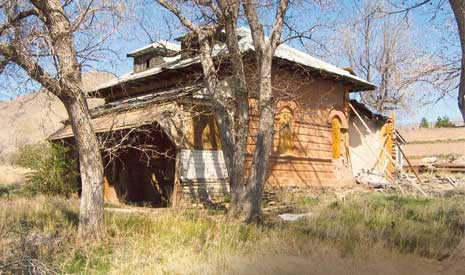
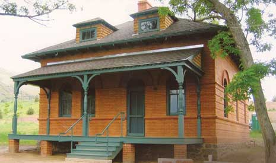

Who are we?
In 1990 Colorado voters approved a constitutional amendment to allow limited-stakes gaming in Black Hawk, Central City, and Cripple Creek with the condition that a portion of gaming tax revenue be redistributed through a grants program to preserve Colorado’s historic sites. This grant program is called the State Historical Fund (SHF).
Our mission is to foster heritage preservation through tangible and highly visible projects for direct and demonstrable public benefit.
Did you know?:
- SHF has awarded more than $290,000,000 dollars in grant funding.
- We have completed over 4,400 successful preservation and archaeological projects.
- We have awarded grants in all 64 counties in Colorado.
Available Grants
Link: Non-Competitive
Link: Competitive